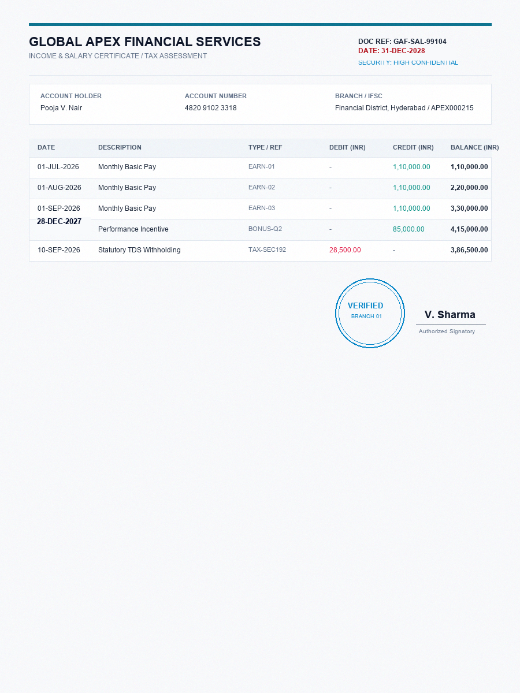

Tap any highlighted box on the document to view detailed evidence.
4 Operations Validation Matrix
Evaluates the document across all 4 independent forensic operations simultaneously. Tap any card to spotlight anomalies.
Original vs. Spliced Forgery
Drag the interactive slider. Notice how the altered balance digit '9' is invisible to the human eye, while the on-device ELA layer exposes the differential compression history.


Can You Spot the Forgery?
Test your human eyes against AegisDoc's on-device forensic algorithms. Click the document you believe has been digitally manipulated.

Multi-Signal Mathematical Engine
AegisDoc does not rely on opaque LLM guesses. It correlates six orthogonal computer vision and signal processing kernels.
Privacy Guarantee & Responsible AI Disclosure
Zero Cloud Transmission: 100% of raw image pixels, extracted feature matrices, and bounding boxes are evaluated strictly within local device memory. Documents are never transmitted to external cloud servers, satisfying strict banking compliance directives (GDPR & RBI).
Probabilistic Risk Index: AegisDoc computes a calibrated statistical likelihood score. Flagged documents require human compliance officer review rather than an autonomous conviction.